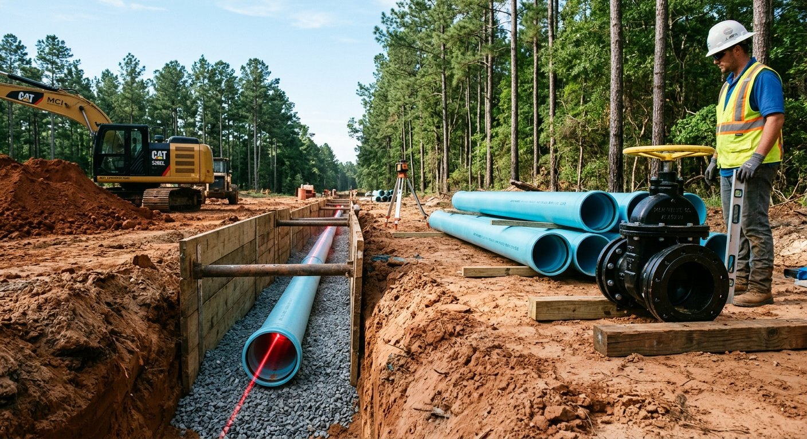

DIV 01 · WATER SYSTEMS01
Municipal & Commercial Water Mains
Precision open-cut waterline installation for municipal water districts, ARPA infrastructure improvements, rural water associations, and commercial developments — built for leak-free hydrostatic testing and smooth tie-ins.
- Pipe Sizes: 4", 6", 8", 12", and 20" C900 PVC & ductile iron mains
- Appurtenances: Mechanical-joint gate valves, fire hydrants, and service taps
- Compliance: Crushed-stone bedding, pressure testing, and disinfection protocols